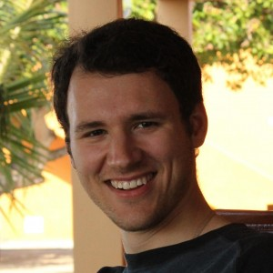

My interests
- Learning Mandarin Chinese
- Collaboration systems (e.g. Wikipedia, github, crowdfunding sites...)
- Science Fiction
- Coding
- Acquiring more interests
Some of my projects
Bird Escape - An IVR room escape game for practicing Mandarin
Language - A crowdsourcing approach to natural language programming.
cfg-gen - An Interface for generating things from context-free grammars.
Previous Work
University of Washington CSE
(2011-2013)
Projects:
- Interpreter Connect, a system for coordinating over-the-phone Spanish interpretation sessions.
- ODK Survey, a HTML/js mobile data collection tool similar to ODK Collect
- FreeSpeech, a Cordova app for guiding, recording and annotating interviews.
- TextGenerator, a web application for generating images of indic text.
- Maintenance programming on XLSForm.
VillageReach
(Summer of 2011)
- ODK Scan, an android app for digitizing paper forms via camera. (continued development at UW)
City of Bellevue
(Summer/winter of 2007 & summer 2008)